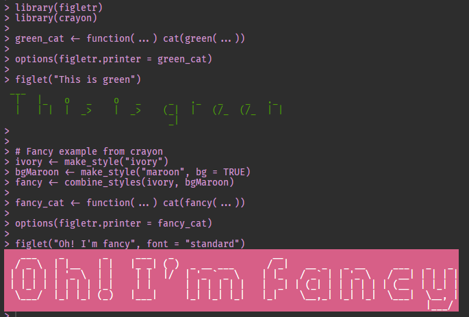

The goal of figletr is to write message using figlet fonts. You can also can parse figlet fonts (*.flf files).
Installation
You can install the released version of figletr from CRAN with:
install.packages("figletr")And the development version from GitHub with:
# install.packages("devtools")
devtools::install_github("jbkunst/figletr")Usage
library(figletr)
figlet(Sys.Date())
#> ____ ___ ____ ___ ___ _ _ ____ ___
#> |___ \ / _ \ |___ \ / _ \ / _ \ | || | |___ \ / _ \
#> __) | | | | | __) | | | | | _____ | | | | | || |_ _____ __) | | (_) |
#> / __/ | |_| | / __/ | |_| | |_____| | |_| | |__ _| |_____| / __/ \__, |
#> |_____| \___/ |_____| \___/ \___/ |_| |_____| /_/
#>
text <- "Figlet in R!"
figlet(text)
#> _____ _ _ _ _ ____ _
#> | ___| (_) __ _ | | ___ | |_ (_) _ __ | _ \ | |
#> | |_ | | / _` | | | / _ \ | __| | | | '_ \ | |_) | | |
#> | _| | | | (_| | | | | __/ | |_ | | | | | | | _ < |_|
#> |_| |_| \__, | |_| \___| \__| |_| |_| |_| |_| \_\ (_)
#> |___/
figlet(text, "banner")
#> ####### ###### ###
#> # # #### # ###### ##### # # # # # ###
#> # # # # # # # # ## # # # ###
#> ##### # # # ##### # # # # # ###### #
#> # # # ### # # # # # # # # #
#> # # # # # # # # # ## # # ###
#> # # #### ###### ###### # # # # # # ###
#>
figlet(text, "contessa")
#> .___ . , .__ |
#> [__ * _ | _ -+- *._ [__) |
#> | |(_]|(/, | |[ ) | \ *
#> ._|
figlet(text, "smkeyboard")
#> ____ ____ ____ ____ ____ ____ _________ ____ ____ _________ ____ ____
#> ||F ||||i ||||g ||||l ||||e ||||t |||| ||||i ||||n |||| ||||R ||||! ||
#> ||__||||__||||__||||__||||__||||__||||_______||||__||||__||||_______||||__||||__||
#> |/__\||/__\||/__\||/__\||/__\||/__\||/_______\||/__\||/__\||/_______\||/__\||/__\|
figlet(text, "smisome1")
#> ___ ___ ___ ___ ___ ___ ___ ___ ___
#> /\ \ /\ \ /\ \ /\__\ /\ \ /\ \ /\ \ /\__\ /\ \
#> /::\ \ _\:\ \ /::\ \ /:/ / /::\ \ \:\ \ _\:\ \ /:| _|_ /::\ \
#> /::\:\__\ /\/::\__\ /:/\:\__\ /:/__/ /::\:\__\ /::\__\ /\/::\__\ /::|/\__\ /::\:\__\
#> \/\:\/__/ \::/\/__/ \:\:\/__/ \:\ \ \:\:\/ / /:/\/__/ \::/\/__/ \/|::/ / \;:::/ /
#> \/__/ \:\__\ \::/ / \:\__\ \:\/ / \/__/ \:\__\ |:/ / |:\/__/
#> \/__/ \/__/ \/__/ \/__/ \/__/ \/__/ \|__|
figlet(text, "speed")
#> _______________ ______ _____ _____ ________ ______
#> ___ ____/___(_)_______ ____ /_____ __ /_ ___(_)_______ ___ __ \___ /
#> __ /_ __ / __ __ `/__ / _ _ \_ __/ __ / __ __ \ __ /_/ /__ /
#> _ __/ _ / _ /_/ / _ / / __// /_ _ / _ / / / _ _, _/ /_/
#> /_/ /_/ _\__, / /_/ \___/ \__/ /_/ /_/ /_/ /_/ |_| (_)
#> /____/
figlet(text, "univers")
#>
#> 88888888888 88 88 88 88888888ba 88
#> 88 "" 88 ,d "" 88 "8b 88
#> 88 88 88 88 ,8P 88
#> 88aaaaa 88 ,adPPYb,d8 88 ,adPPYba, MM88MMM 88 8b,dPPYba, 88aaaaaa8P' 88
#> 88""""" 88 a8" `Y88 88 a8P_____88 88 88 88P' `"8a 88""""88' 88
#> 88 88 8b 88 88 8PP""""""" 88 88 88 88 88 `8b ""
#> 88 88 "8a, ,d88 88 "8b, ,aa 88, 88 88 88 88 `8b aa
#> 88 88 `"YbbdP"Y8 88 `"Ybbd8"' "Y888 88 88 88 88 `8b 88
#> aa, ,88
#> "Y8bbdP"
figlet(text, "sblood")
#> @@@@@@@@ @@@ @@@@@@@ @@@ @@@@@@@@ @@@@@@@ @@@ @@@ @@@ @@@@@@@ @@@
#> @@! @@! !@@ @@! @@! @@! @@! @@!@!@@@ @@! @@@ @@@
#> @!!!:! !!@ !@! @!@!@ @!! @!!!:! @!! !!@ @!@@!!@! @!@!!@! !@!
#> !!: !!: :!! !!: !!: !!: !!: !!: !!: !!! !!: :!!
#> : : :: :: : : ::.: : : :: ::: : : :: : : : : :.:
#> Change printer
Example: Using cat instead of message
# message is the dafault
figlet("Figlet in R!")
#> _ _
#> |_ o _ | _ _|_ o ._ |_) |
#> | | (_| | (/_ |_ | | | | \ o
#> _|
options(figletr.printer = cat)
figlet("Figlet in R!")
#> _ _
#> |_ o _ | _ _|_ o ._ |_) |
#> | | (_| | (/_ |_ | | | | \ o
#> _|
# revert
options(figletr.printer = message)You can use the crayon package to combine cat and a color:
This README don’t print the console colors
library(figletr)
library(crayon)
green_cat <- function(...) cat(green(...))
options(figletr.printer = green_cat)
figlet("This is green")
# Fancy example from crayon
ivory <- make_style("ivory")
bgMaroon <- make_style("maroon", bg = TRUE)
fancy <- combine_styles(ivory, bgMaroon)
fancy_cat <- function(...) cat(fancy(...))
options(figletr.printer = fancy_cat)
figlet("Oh! I'm fancy", font = "standard")
Extra
Fonts
Info about available fonts:
dplyr::glimpse(figletr::fonts)
#> Rows: 148
#> Columns: 8
#> $ font <chr> "3-d", "3x5", "5lineoblique", "acrobatic", "alli...
#> $ baseline <dbl> 8, 4, 5, 9, 7, 7, 5, 5, 7, 8, 7, 7, 7, 8, 5, 6, ...
#> $ comment_lines <dbl> 1, 4, 2, 15, 3, 4, 12, 16, 12, 3, 3, 3, 2, 2, 23...
#> $ heigth <dbl> 8, 6, 7, 12, 7, 7, 7, 6, 8, 8, 7, 7, 8, 8, 6, 8,...
#> $ max_length <dbl> 20, 6, 20, 25, 26, 26, 10, 10, 54, 20, 20, 20, 2...
#> $ old_layout <dbl> -1, -1, 15, 0, 32, 32, -1, 16, 0, -1, -1, -1, -1...
#> $ author <chr> "Daniel Henninger", "Richard Kirk & Daniel Cabez...
#> $ font_creation_date <chr> "", "", "1995/01", "1994/08", "1994/06", "1994/0...Demo
figlet_demo(msg = "Text to test")Parser
path_to_font <- system.file(paste0("fonts/contessa.flf"), package = "figletr")
path_to_font
#> [1] "C:/Users/Joshua/Documents/R/win-library/3.6/figletr/fonts/contessa.flf"
font <- figletr::parse_font(path_to_font)
str(head(font))
#> List of 6
#> $ : chr [1:4] " " " " " " " "
#> $ !: chr [1:4] " | " " | " " * " " "
#> $ ": chr [1:4] "* * " "` ` " " " " "
#> $ #: chr [1:4] "_|_|_ " "_|_|_ " " | | " " "
#> $ $: chr [1:4] " _;_. " "(_|_ " "._|_) " " ` "
#> $ %: chr [1:4] "* / " " / " "/ * " " "
R <- font[["R"]]
R
#> [1] ".__ " "[__)" "| \\" " "
for(i in 1:length(R)) message(R[i])
#> .__
#> [__)
#> | \
#> Related work
%>% OMG! I swear I checked to see if there was any previous implementation of figlet fonts in R.
- https://github.com/wrathematics/Rfiglet Uses the C command line figlet and have a shiny app!
- https://github.com/richfitz/rfiglet
So what can this package offer?:
- The possibily to change/fix the default font.
- Relative simple integration with {crayon} package.
- A figlet font parser. You can obtain a character list with every character.